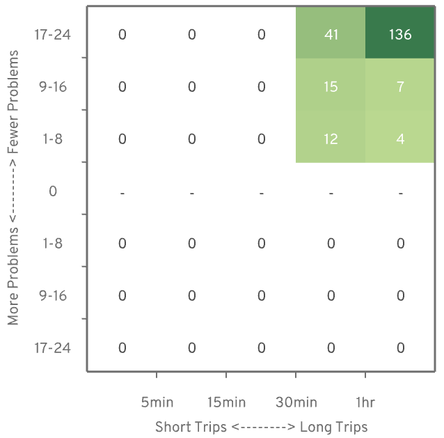

Allow bike and foot traffic through Broadmoor
posted July 1, 2021 by Michael Kirk — meet the A/B Street team
You could be forgiven for not knowing much about the Broadmoor neighborhood in Seattle — that's kind of by design. Using the A / B Street travel simulation game, we're going to explore how it could become a valuable link for people walking and biking in Seattle.

Broadmoor lies a few miles northeast of Downtown Seattle, sandwiched between the delightful Washington Park Arboretum and the Madison Park neighborhood.
Adjacent to Broadmoor, the Madison Park and Washington Park neighborhoods offer grocery stores, a hardware store, dining, and recreational destinations.

Madison Park Beach on Lake Washington is another notable neighborhood destination.
photo courtesy of the City of Seattle
If you were headed to one of these destinations today, and coming from, say Montlake or from the University District via the University bridge, it would almost certainly require you to take a long stretch walking or biking down East Madison Ave. This particular stretch of road is known to be high stress for people on bikes, and can be an equally harrowing walk for those on foot.

If people were instead allowed to walk or ride through Broadmoor, they could expect shorter trips on quieter streets.
So why don't people take this seemingly superior route through Broadmoor? Apologies if you already have the context, but a greatly abridged history lesson is in order for those who don't.
Up until about 200 years ago, what we refer to as Broadmoor, like much land near the Puget Sound, was a forest inhabited by the Duwamish people. And, like much land near the Puget Sound, it was cut clear, and the timber sold off by a mill company. The owners of this particular parcel were the Puget Mill Company. After logging the parcel, they split it, not quite in half. The smaller western half was given to the city, and gardened into what is now enjoyed by the public as the Washington Park Arboretum. The General Manager from the very same Puget Mill Company was then allowed to develop the larger eastern half of the parcel into that venerable American trifecta: a golf course / country club / private gated residential community.1
So, Broadmoor was initially built as a gated enclave impassible to all but a select few of the leisure class. A century later, how much has changed?

Try to walk through or around Broadmoor today, and you'll find yourself repeatedly redirected or inexplicably dead-ended.

There are gates on the north and south ends of Broadmoor. Both are guarded by uniformed security.
Broadmoor is an obstacle to people walking and biking to desirable destinations on either side of it. What if things were different? What if we allowed people on bikes, on foot, and in wheelchairs through Broadmoor rather than diverting them down Madison Ave?
Cui bono
To get an intuition for the benefits that opening up Broadmoor might have, we turn to A/B Street. If you have an idea for a change in your city streets, A/B Street can visualize that change and measure its impacts.
If you've never seen A/B Street before, here's what it looks like:

A/B Street uses public data sources, like OpenStreetMap and Seattle's Soundcast Travel Demand Model to simulate travel in the city. You can gain insight into your proposal by comparing metrics like travel duration and risk exposure as they are affected by your proposal.
In A/B Street, allowing people to walk and cycle through Broadmoor, is a matter of clicks. A/B Street simulates how this change affects people's travel. You can watch as each individual person goes about their day. If given new circumstances, people will be able to make new, hopefully better, choices for themselves.
To gain a little intuition for the benefits of our proposal, let's follow one person in A/B Street on her morning walk from Madison Park to the University District, comparing the trip before and after being allowed to walk through Broadmoor.
Some of the highlights of her trip include a much calmer walk through Broadmoor as opposed to crossing along the many busy intersections on Madison Ave.
Beyond Anecdotes
The morning commute shown above is good for story telling. It's an intuitive anecdote for why this could be a worthwhile proposal. However, travel behavior is highly interdependent. Every choice one person makes has potential ripple effects for others.
We need more than a handful of individual examples. This is why A/B Street includes tools for quantifying overall travel experiences — allowing us to see beyond anecdotes to visualize trends across the map. Let's take a look at how overall trip times and some safety metrics are affected by this proposal.
Trip Durations
Cars: Individual Trips

For people driving, some trips were a little faster, while others a little slower.
Overall it's a wash for drivers, which is expected, but a useful validation.
Walking and Biking: Individual Trips

It gets more interesting for people walking and cycling. Especially for longer trips, people get where they're going more quickly after being allowed access through Broadmoor.
Apart from the benefits conveyed to pedestrians and cyclists, these charts also nicely show the interdependent nature of travel. Even though overall travel time and the routes available to drivers didn't change at all, individual drivers did experience downstream effects of pedestrians and bicyclists making different choices. This interdependence is fertile soil for unintended consequences, which is why having tools to measure overall impact is essential.
Time Saved / Lost
The dot charts are helpful for seeing the shape of some trends, but it's hard to quantify the improvements. These next charts compare the total amount of time saved with the total amount of time lost.
Cars: Overall

Once again, car traffic is mostly a wash. About as much time was lost as was saved by others, implying a neutral change for people driving.
Walking and Biking: Overall

A clearer trend emerges for people walking and biking — many long trips were substantially faster given access to Broadmoor.
Trip duration was worth considering as a gut check to make sure a proposal seems reasonable, and this proposal indeed has some favorable evidence for faster trips, but trip duration shouldn't be the only, or even most important, effect to consider. In particular, there are important safety metrics we can measure with A/B Street which we'll dive into next.
Safety
All people should be able to get where they're going safely. As our most vulnerable road users, people walking, bicycling, and those using mobility aids deserve extra consideration.
There is an increasing effort to not only look at previous crash sites, but also to consider the types of places where crashes are likely to occur. By prioritizing places based on their similarity to crash sites, we can prevent or mitigate future crash sites before they happen. In this vein, last year Seattle DOT released a safety study analyzing which physical roadway features that are associated with an increased risk of traffic-related death or serious injury.
For example:
Right hook crash risk tends to be higher on arterial streets. [...] This could be due to the overall complexity of the intersection and/or the width of the intersection.2
By classifying these risky features, A/B Street can keep tabs as people in the simulation are exposed to these risks. You can follow an individual's trip and see what risks they are exposed to. For a macro view, you can aggregate and identify map-wide hot spots for specific problems. Using A/B Street, you can compare how a proposal affects these metrics.
Identifying Hotspots

South of the Montlake bridge, crossing Highway 520, has complex arterial intersections and relatively high bike and foot traffic, meaning many people are exposed to these risks.
Walking: Arterial Intersections
In the simulation, opening Broadmoor to pedestrians allowed about 200 people, over the course of the day, to pass through fewer arterial intersections. Longer walks were especially affected.
Biking: Car Wants to Overtake

In shared lanes, a common risk is that faster moving cars pull up too close behind a cyclist. This is uncomfortable for both the person on the bike and the person driving. Having the option to ride through Broadmoor gives some cyclists the option to avoid sharing a lane with cars on busy Madison.
Biking: Complex Intersections

Simple intersections are where just two roads cross. Passing through a complex intersection, where more than two roads cross, has an increased risk of death or severe injury for people on bikes2. Being able to cycle through Broadmoor was a strict improvement for this metric.
This was a quick overview of some of the tools A/B Street has for measuring baseline safety metrics and seeing how your proposal affects them. We're continuing to add metrics and visualizations, but we'd love to know if there are any you'd specifically like to see.
What's Next?
Using a tool like A/B Street is absolutely not a definitive evaluation. It's intended to get you started tinkering.
By identifying and measuring things we care about, and simulating how they change, we can quickly gain some visual intuition and quantified evidence to validate (or refute) assumptions in our proposal, and hopefully it's a little fun too.
Here we've shown there is at least some evidence that letting people walk and bike through the Broadmoor neighborhood in Seattle could result in faster, safer, and more pleasant trips without unduly impacting other traffic.
If you'd like to see for yourself what the Broadmoor proposal looks like, give it a try, you can run A/B Street in your browser or download the desktop client.
Or, if you have a different idea for improving how we get around, in Seattle or elsewhere, give it a go! Please contact us on twitter or github if you have any questions or issues.
Caveats
It bears repeating: A map is not the territory. The signifier is not the signified. A simulation is not, and can never be, the actual world.
But like a good map or a good metaphor, a good simulation can be a useful tool for learning and advocacy. Beyond the shortcomings inherent to any such semiotic excursion, there are a couple of limitations we wanted to call out in this case study in particular.
Data Sources
The underlying road network is inferred from OpenStreetMap. OpenStreetMap (OSM) is a global community of mapping enthusiasts whose software and data is freely available. Using OSM, A/B Street is already usable in cities all over the globe. However, as a freely available community maintained project, OSM comes with no data quality guarantees, and local mapping conventions can vary. Not everyone using OSM is interested in the incredible level of detail required to run a travel simulation. This situation is ever improving though, and we'd love to have you give A/B Street a try, wherever you are.
A/B Street leverages Seattle's Soundcast travel demand model to generate the list of trips for each person in A/B Street. Specifically, for each person, Soundcast is responsible for saying where they need to be and at what time. Soundcast is also responsible for what mode the person takes - whether they walk, drive, cycle, etc.
Modeshift
Intuitively if you make driving more attractive, more people will drive. Similarly if you make a mode like cycling, walking, or transit more attractive, more people will choose that mode.
A/B Street doesn't currently account for this shifting of modes. It naively assumes that people will go about their day, always choosing to drive or walk or cycle regardless of what changes you make to the city. Mode shift is a real and important behavior that we are excited to implement and measure in A/B Street in the future.
There's tons of other improvements in the works. Follow @CarlinoDustin for updates, and let us know what you'd like to see.
Footnotes
Jane Powell Thomas, Madison Park Remembered (J.P. Thomas, 2004)
Seattle Department of Transportation's safety study: City of Seattle Bicycle and Pedestrian Safety Analysis Phase 2